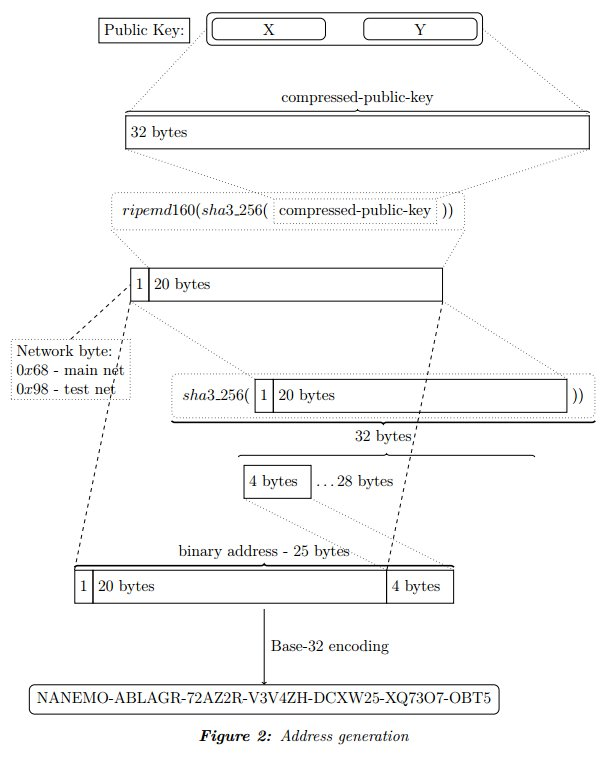

公開鍵のアドレスへの変換
公開鍵をアドレスに変換する際には以下の手順が必要です。
- 256-bit sha3を公開鍵に適用
- 160bit Ripemdハッシュを適用
- バージョン番号のバイトを先頭に付加（0x68または0x98）
- 256-bit sha3をもう一度適用し、先頭4バイトをチェックサムとする
- ステップ3の結果とステップ4のチェックサムを結合
- 最終結果をbase32でエンコード
例:
- 公開鍵
- X: deb73ed7d0334e983701feba4599a37fb62e862e45368525b8d9fb9ab80aa57e
- Y: 169318abc3e5b002059a396d4cf1c3d35ba022c675b15fb1c4943f7662eef268
- Z: a90573bd221a3ae33fec5d4efc4fa137897a40347eeafe87bee5d67ae5b4f725
- 圧縮後の公開鍵
- c5247738c3a510fb6c11413331d8a47764f6e78ffcdb02b6878d5dd3b77f38ed
- sha3-256を適用
- 70c9dcf696b2ad92dbb9b52ceb33ec0eda5bfdb7052df4914c0919caddb9dfcf
- Ripemdハッシュを適用
- 1f142c5ea4853063ed6dc3c13aaa8257cd7daf11
- バージョン情報を付加
- 681f142c5ea4853063ed6dc3c13aaa8257cd7daf11
- sha3-256を適用
- 09132a5ea90ab7fa077847a699b4199691b4130f66876254eadd70ae459dbb53
- 4バイトのチェックサムは09132a5e(上の先頭4バイト)
- 以上からバイナリ形式のアドレスは: 681f142c5ea4853063ed6dc3c13aaa8257cd7daf1109132a5e
- base-32エンコーディング: NAPRILC6USCTAY7NNXB4COVKQJL427NPCEERGKS6
- 見やすい形: NAPRIL-C6USCT-AY7NNX-B4COVK-QJL427-NPCEER-GKS6
図2
